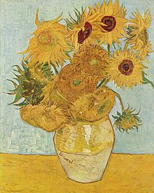

Les Tournesols est le nom attribué à deux séries de peintures réalisées par Vincent van Gogh. La première est exécutée lors de son séjour à Paris en 1887, avec des tournesols posés sur une table. La seconde comprend six toiles réalisées lors de son séjour à Arles en août 1888 (quatre tableaux) et en janvier 1889 (deux copies qu'il appelle les répétitions) ; elle représente des bouquets de tournesols dans des vases. Une septième toile du sujet, d'attribution controversée lui est en outre attribuée.
Cliquez ici pour vous rendre sur la page Wikipédia de l'oeuvre "Les Tournesols".
Lien vers la biographie de Vincent Van Gogh.
Lien vers l'oeuvre "La Nuit Etoilée"